Schering Bridge Theory
This bridge is used to measure to the capacitance of the capacitor, dissipation factor and measurement of relative permittivity. Let us consider the circuit of Schering bridge as shown below:
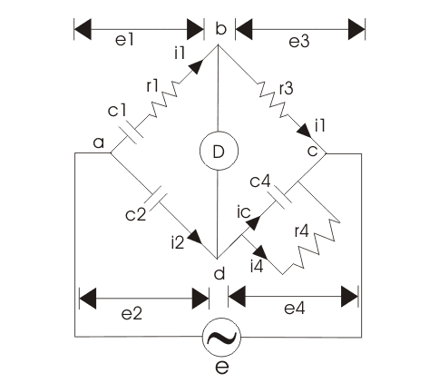
Here, c1 is the unknown capacitance whose value is to be determined with series electrical resistance r1.
c2 is a standard capacitor.
c4 is a variable capacitor.
r3 is a pure resistor (i.e. non inductive in nature).
And r4 is a variable non inductive resistor connected in parallel with variable capacitor c4. Now the supply is given to the bridge between the points a and c. The detector is connected between b and d. From the theory of ac bridges we have at balance condition,
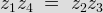
Substituting the values of z1, z2, z3 and z4 in the above equation, we get
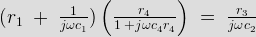
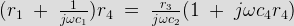
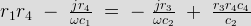
Equating the real and imaginary parts and the separating we get,
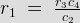
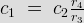
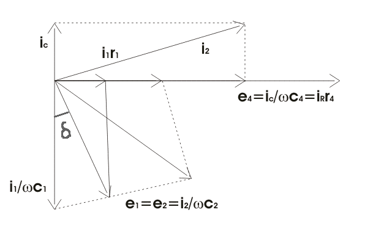
Let us consider the phasor diagram of the above Shering bridge circuit and mark the voltage drops across ab,bc,cd and ad as e1, e3,e4 and e2 respectively. From the above Schering bridge phasor diagram, we can calculate the value of tanδ which is also called the dissipation factor.
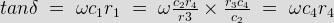
The equation that we have derived above is quite simple and the dissipation factor can be calculated easily. Now we are going to discuss high voltage Schering bride in detail. As we have discussed that simple schering bridge (which uses low voltages) is used for measuring dissipation factor, capacitance and measurement of other properties of insulating materials like insulating oil etc. What is the need of high voltage schering bridge? The answer to this question is very simple, for the measurement of small capacitance we need to apply high voltage and high frequency as compare to low voltage which suffers many disadvantages. Let us discuss more features of this high voltage Schering bridge:
voltage
schering bridge" width="484" height="422" class="size-full wp-image-7145" /> High Voltage Schering Bridge(a) The bridge arms ab and ad consists of only capacitors as shown the bridge given below and impedances of these two arms are quite large as compared to the impedances of bc and cd. The arms bc and cd contains resistor r3 and parallel combination of capacitor c4 and resistor r4 respectively. As impedances of bc and cd are quite small therefore drop across bc and cd is small. The point c is earthed, so that the voltage across bc and dc are few volts above the point c.
(b) The high voltage supply is obtained from a transformer 50 Hz and the detector in this bridge is a vibration galvanometer.
(c) The impedances of arms ab and ad very are large therefore this circuit draws low electric current hence power loss is low but due to this low electric current we need a very sensitive detector to detect this low current.
(d) The fixed standard capacitor c2 has compressed gas which works as dielectric therefore dissipation factor can be taken as zero for compressed air. Earthed screens are placed between high and low arms of the bridge to prevent errors caused due to inter capacitance.
Let us study how Schering bridge measures relative permittivity: In order measure the relative permittivity, we need to first measure capacitance of a small capacitor with specimen as dielectric. And from this measured value of capacitance relative permittivity can calculated easily by using the very simple relation:
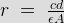
Where r is relative permeability.
c is the capacitance with specimen as dielectric.
d is the spacing between the electrodes.
A is the net area of electrodes.
and ε is permittivity of free space.
There is another way to calculate relative permittivity of the specimen by changing electrode spacing. Let us consider diagram shown below

Here A is the area of electrode.
d is the thickness of the specimen.
t is the gap between the electrode and specimen (here this gap is filled by compressed gas or air).
cs is the capacitance of specimen.
co is capacitance due to spacing between electrode and specimen.
c is the effective combination of cs and co.
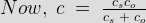
From figure above, as two capacitors are connected in series,
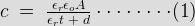
εo is permittivity of free space, εr is relative permittivity, when we remove specimen and the spacing readjusted to have same value of capacitance, the expression for capacitance reduces to
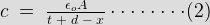
On equating (1) and (2), we will get the final expression for of εr as:
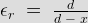

 by
by